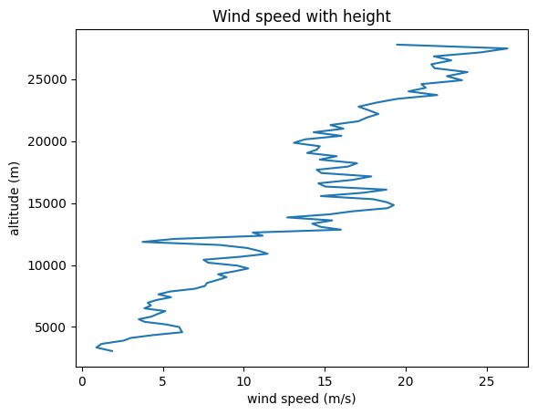
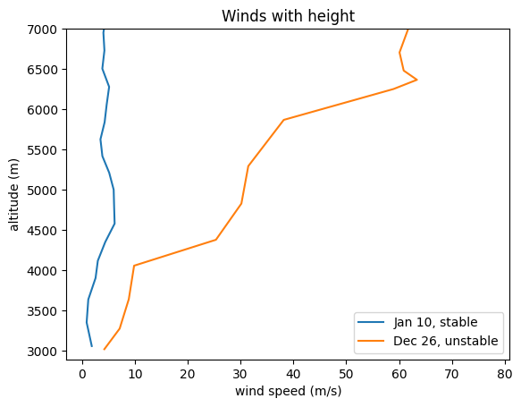
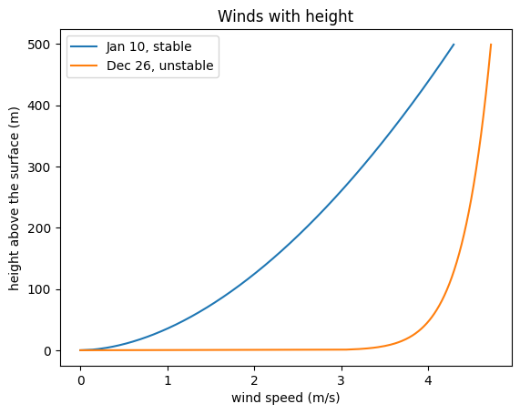
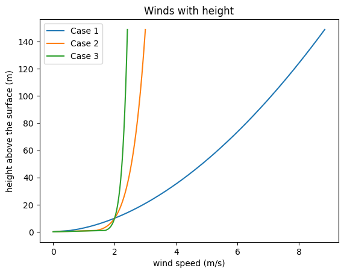

Lab 3-2: Wind profiles#
We typically have a measurement of wind at one height above the ground but need to estimate (a) the wind at the height of the smokestack plume or (b) the average wind speed within the mixing depth (to determine the dilution rate or ventilation coefficient).
import numpy as np
import pandas as pd
import scipy.stats as stats
import matplotlib.pyplot as plt
%matplotlib inline
From lecture notes, we define $\( u(z) = u_{ref}(\frac{z}{z_{ref}})^p \)\( where \)u(z)\( is the wind at any elevation, \)u_{ref}\( is the reference wind (this is what is measured), \)z\( is the elevation, \)z_{ref}\( is the elevation at which the reference wind was measured, and \)p$ is an exponent, which varies with stability and roughness.
When using a reference height of 10 m, the EPA recommends using values of of p from the following table (from the User’s Guide for the ISC3 Dispersion Models, Vol II, EPA_454/B-95-003b, U.S. EPA, Sept. 1995):
Stability Category |
Urban |
Rural |
|---|---|---|
A |
0.15 |
0.07 |
B |
0.15 |
0.07 |
C |
0.20 |
0.10 |
D |
0.25 |
0.15 |
E |
0.30 |
0.35 |
F |
0.30 |
0.55 |
# Now we can read in our sounding data from lab 2 and see how the wind profile observed by the balloon matches this
# copy one stable day '2022-01-10_radiosonde.csv' and one stormy and well-mixed day '2021-12-26_radiosone.csv'
# into this folder where you're working.
sonde_temp_profile = pd.read_csv('2022-01-10_radiosonde.csv')
# take a look at what is included in the file
sonde_temp_profile.head()
# Here, we are interested in the wind speed (wspd) in m/s.
# Note that the sounding also provides info on wind direction, where
# u_wind is the magnitude of winds moving from west to east, and
# v_wind is the magnitude of winds moving from south to north.
| time | pres | qc_pres | tdry | qc_tdry | dp | qc_dp | wspd | qc_wspd | deg | ... | qc_u_wind | v_wind | qc_v_wind | wstat | asc | qc_asc | lat | lon | alt | potential_T | |
|---|---|---|---|---|---|---|---|---|---|---|---|---|---|---|---|---|---|---|---|---|---|
| 0 | 2022-01-10 11:34:00 | 713.79047 | 0.0 | -9.979830 | 0.0 | -18.522203 | 0.0 | 1.867797 | 0.0 | 328.13560 | ... | 0.0 | -1.741468 | 0.0 | NaN | 5.147457 | 0.135593 | 38.959520 | -106.98986 | 3055.1375 | 16.678686 |
| 1 | 2022-01-10 11:35:00 | 687.39090 | 0.0 | -5.463167 | 0.0 | -21.827170 | 0.0 | 0.898333 | 0.0 | 154.98334 | ... | 0.0 | -0.746618 | 0.0 | NaN | 4.701667 | 0.000000 | 38.958880 | -106.98948 | 3348.7185 | 24.837664 |
| 2 | 2022-01-10 11:36:00 | 662.85834 | 0.0 | -4.424000 | 0.0 | -26.478666 | 0.0 | 1.211667 | 0.0 | 252.70000 | ... | 0.0 | -0.953473 | 0.0 | NaN | 4.918333 | 0.000000 | 38.958366 | -106.98947 | 3634.4617 | 29.118020 |
| 3 | 2022-01-10 11:37:00 | 640.70935 | 0.0 | -4.980833 | 0.0 | -30.277832 | 0.0 | 2.588334 | 0.0 | 335.06668 | ... | 0.0 | -2.305604 | 0.0 | NaN | 3.791666 | 0.000000 | 38.957546 | -106.98897 | 3901.4053 | 31.435535 |
| 4 | 2022-01-10 11:38:00 | 623.39840 | 0.0 | -5.733000 | 0.0 | -32.042500 | 0.0 | 3.016666 | 0.0 | 302.40000 | ... | 0.0 | -2.379487 | 0.0 | NaN | 3.650000 | 0.000000 | 38.956264 | -106.98776 | 4116.1970 | 32.968940 |
5 rows × 24 columns
# Make a plot of height vs. windspeed
plt.figure()
plt.plot(sonde_temp_profile['wspd'],sonde_temp_profile['alt'])
plt.ylabel('altitude (m)')
plt.xlabel('wind speed (m/s)')
#plt.xlim(0,10000)
plt.title('Wind speed with height')
Text(0.5, 1.0, 'Wind speed with height')

# Add in the other day for comparison
sonde_temp_profile2 = pd.read_csv('2021-12-26_radiosonde.csv')
sonde_temp_profile2.head()
| time | pres | qc_pres | tdry | qc_tdry | dp | qc_dp | wspd | qc_wspd | deg | ... | qc_u_wind | v_wind | qc_v_wind | wstat | asc | qc_asc | lat | lon | alt | potential_T | |
|---|---|---|---|---|---|---|---|---|---|---|---|---|---|---|---|---|---|---|---|---|---|
| 0 | 2021-12-26 11:21:00 | 693.21545 | 0.0 | -4.425254 | 0.0 | -8.821864 | 0.0 | 4.249152 | 0.0 | 131.91525 | ... | 0.0 | 2.935613 | 0.0 | NaN | 4.352543 | 0.135593 | 38.960567 | -106.990940 | 3016.0867 | 25.267000 |
| 1 | 2021-12-26 11:22:00 | 670.93726 | 0.0 | -6.650167 | 0.0 | -9.674833 | 0.0 | 7.146667 | 0.0 | 174.85000 | ... | 0.0 | 6.685246 | 0.0 | NaN | 3.863333 | 0.000000 | 38.963493 | -106.992420 | 3272.3267 | 25.573175 |
| 2 | 2021-12-26 11:23:00 | 640.13590 | 0.0 | -9.671000 | 0.0 | -11.190167 | 0.0 | 8.874998 | 0.0 | 215.58333 | ... | 0.0 | 7.083486 | 0.0 | NaN | 8.098333 | 0.000000 | 38.967400 | -106.989940 | 3638.2449 | 26.193165 |
| 3 | 2021-12-26 11:24:00 | 606.30780 | 0.0 | -12.815167 | 0.0 | -13.453666 | 0.0 | 9.878333 | 0.0 | 215.41667 | ... | 0.0 | 7.834729 | 0.0 | NaN | 5.453333 | 0.000000 | 38.970660 | -106.987015 | 4054.3499 | 27.242916 |
| 4 | 2021-12-26 11:25:00 | 581.16330 | 0.0 | -14.862834 | 0.0 | -18.385002 | 0.0 | 25.359997 | 0.0 | 238.30000 | ... | 0.0 | 13.322145 | 0.0 | NaN | 6.468333 | 0.000000 | 38.976658 | -106.977410 | 4376.5483 | 28.515516 |
5 rows × 24 columns
# Make a plot of height vs. windspeed for both days
# Zoom in near the surface
plt.figure()
plt.plot(sonde_temp_profile['wspd'],sonde_temp_profile['alt'],label='Jan 10, stable')
plt.plot(sonde_temp_profile2['wspd'],sonde_temp_profile2['alt'],label='Dec 26, unstable')
plt.ylabel('altitude (m)')
plt.xlabel('wind speed (m/s)')
plt.ylim(2890,7000)
plt.title('Winds with height')
plt.legend(loc="best")
<matplotlib.legend.Legend at 0x7fa756496350>

How do we get the 10 m wind speed needed for the Gaussian model?#
We presume that 2890 m is the true surface height where the balloon was launched. The first measurement height is at about 3000 m, which is 110 m above the surface. We can use the power law relationship to scale down the wind to 10 m.
We will call this location rural, and say that Jan 10 is type F. and Dec 26 is type A. To learn more about how type A and type F are defined, see page 10 and 11 of the typed lecture notes on dispersion and smokestack plumes.
Basically, these are the Pasquill-Gifford-Turner Stability Classifications. Type A is very unstable. Type F is stable. These inform the choice of p value in the scaling calculations below.
# Presuming the first sonde-recorded wind speeds at ~3000 m as 110 m above the ground
# Note that this is not the 10 m that the EPA wants.
# We use the scaling equations to estimate the 10 m value.
uref1 = 1.87
zref1 = 110
p1 = 0.55
z1 = 10
u10_1 = uref1*np.power(z1/zref1,p1)
print(u10_1)
uref2 = 4.25
# note that I read this off the lowest measurement from the sounding
zref2 = 110
p2 = 0.07
z2 = 10
u10_2 = uref2*np.power(z2/zref2,p2)
print(u10_2)
0.5001216204828121
3.593283160069813
# and we can create plots of these vertical profiles and compare them
z = np.arange(0,500,1)
u1 = uref1*np.power(z/zref1,p1)
u2 = uref2*np.power(z/zref2,p2)
plt.figure()
plt.plot(u1,z,label='Jan 10, stable')
plt.plot(u2,z,label='Dec 26, unstable')
plt.ylabel('height above the surface (m)')
plt.xlabel('wind speed (m/s)')
#plt.ylim(2890,7000)
plt.title('Winds with height')
plt.legend(loc="best")
<matplotlib.legend.Legend at 0x7fa7565900d0>

We can see that the p parameter determines the shape and how winds scale with height. The stability is very important.
# Let's also plot a simpler case. If we measure 10 m reference wind speed at 5 m/s,
# and we have a smokestack with effective height at 100 m, and we are in a rural setting
# how would wind speed with height vary with stability type
uref1 = 2
zref1 = 10
p1 = 0.55 # for case F, unstable in the table
z1 = 100
u100_1 = uref1*np.power(z1/zref1,p1)
print(u100_1)
uref2 = 2
zref2 = 10
p2 = 0.15 # for case D, neutral
z2 = 100
u100_2 = uref2*np.power(z2/zref2,p2)
print(u100_2)
uref3 = 2
zref3 = 10
p3 = 0.07 # for case A, very unstable
z3 = 100
u100_3 = uref2*np.power(z3/zref3,p3)
print(u100_3)
# and we can create plots of these vertical profiles and compare them
z = np.arange(0,150,1)
u1 = uref1*np.power(z/zref1,p1)
u2 = uref2*np.power(z/zref2,p2)
u3 = uref3*np.power(z/zref3,p3)
plt.figure()
plt.plot(u1,z,label='Case 1')
plt.plot(u2,z,label='Case 2')
plt.plot(u3,z,label='Case 3')
plt.ylabel('height above the surface (m)')
plt.xlabel('wind speed (m/s)')
#plt.ylim(2890,7000)
plt.title('Winds with height')
plt.legend(loc="best")
7.09626778467151
2.8250750892455088
2.349795109879059
<matplotlib.legend.Legend at 0x7fa756610fd0>

Note that if we set the 10 m wind speed to match for all of the p-values, we can get an answer that is mathematically correct but physically unrealistic!